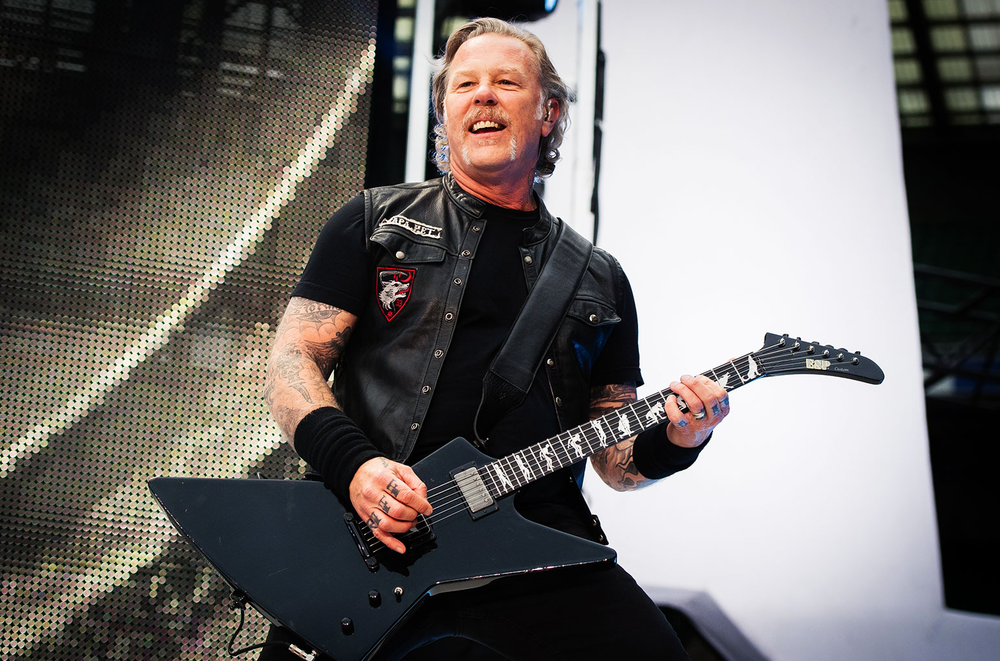
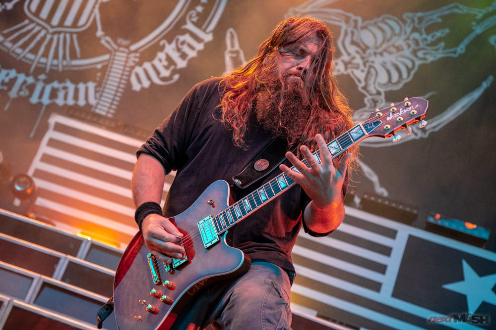

Ibanez
 Ibanez is a Japanese guitar brand which is owned by Hoshino Gakki. Based in Nagoya, Aichi, Japan, Hoshino Gakki was one of the first Japanese musical instrument companies to gain a significant foothold in import guitar sales in the United States and Europe. Ibanez sells electric and acoustic guitars and basses and other stringed instruments such as ukuleles, mandolins and banjos. In addition, they offer guitar and bass amplifiers and a range of other related accessories. They cover the necesities of different types of music such as jazz, blues, classical and heavy metal music. A great artist that uses this brand is the guitarists of the band prestigious heavy metal band Megadeth, Kiko Loureiro.
Ibanez is a Japanese guitar brand which is owned by Hoshino Gakki. Based in Nagoya, Aichi, Japan, Hoshino Gakki was one of the first Japanese musical instrument companies to gain a significant foothold in import guitar sales in the United States and Europe. Ibanez sells electric and acoustic guitars and basses and other stringed instruments such as ukuleles, mandolins and banjos. In addition, they offer guitar and bass amplifiers and a range of other related accessories. They cover the necesities of different types of music such as jazz, blues, classical and heavy metal music. A great artist that uses this brand is the guitarists of the band prestigious heavy metal band Megadeth, Kiko Loureiro.
Fender
The Fender Musical Instruments Corporation, of Scottsdale, Arizona, USA, is famous for making stringed instruments, such as solid-body electric guitars, including the Stratocaster and Telecaster. Leo Fender also designed one of the most, if not the first, commercially successful solid-body electric bass, which is now standard in rock, jazz, country, funk, and all other types of popular music. The company makes instruments such as acoustic guitars, electric basses, mandolins, banjos, and violins, as well as guitar amplifiers, bass amplifiers, and PA (public address) equipment. The talented guitarist Jim Root from the band Slipknot plays a signature guitar from Fender.
ESP
ESP stands for Electric Sound Products and this is a company that specializes in extreme forms of music such as heavy metal, death metal, etc. They are based in both Tokyo and Los Angeles, with distinct product lines for each market. ESP Company manufactures instruments under several names, including "ESP Standard", "ESP Custom Shop", "LTD Guitars and Basses", "Navigator", "Edwards Guitars and Basses", and "Grassroots". Their products range from Japanese-built custom shop instruments to lower end mass-production Korean, Indonesian and Chinese made instruments. The very well-known guitarist James Hetfield from the band Metallica uses a ESP signature model of his own.
Jackson
Jackson is a guitar manufacturer originally owned and operated by Grover Jackson, a partner of Wayne Charvel of Charvel Guitar Repair. It is probably best-known for its "Rhoads" V model guitar, originally designed and used by guitarist Randy Rhoads. This model inspired Grover to start the Jackson guitar company. Wayne Charvel sold his interest in the Charvel name to Grover Jackson November 10,1978. The shop was located in San Dimas, California and manufactured guitars in this location from 1979 to 1986, when the Company merged with IMC (International Music Corporation) a Texas based importer of musical instruments. Mark Morton the guitarists from the metalcore band Lamb of God uses Jackson guitars.
Ernie Ball Musicman
Music Man is an American guitar and bass guitar manufacturer. It is a division of the Ernie Ball corporation. The company is most well-known for its electric and bass guitars. Determined to maintain a reputation for quality, the Music Man company largely produces high-end guitars, especially after being acquired by Ernie Ball in 1984. They have recently made an impact on the extreme music scene, with their models Majesty and Stingray, ranked very high by guitarist of the genre for their versatility, speed and precision. The deathcore guitarist of the band Thy Art Is Murder, Andy Marsh, uses a Majesty model from Ernie Ball.